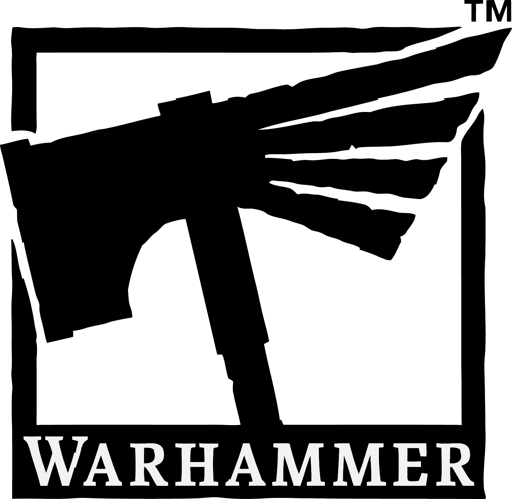
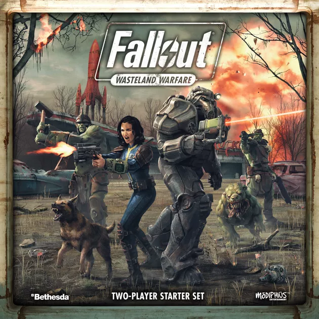
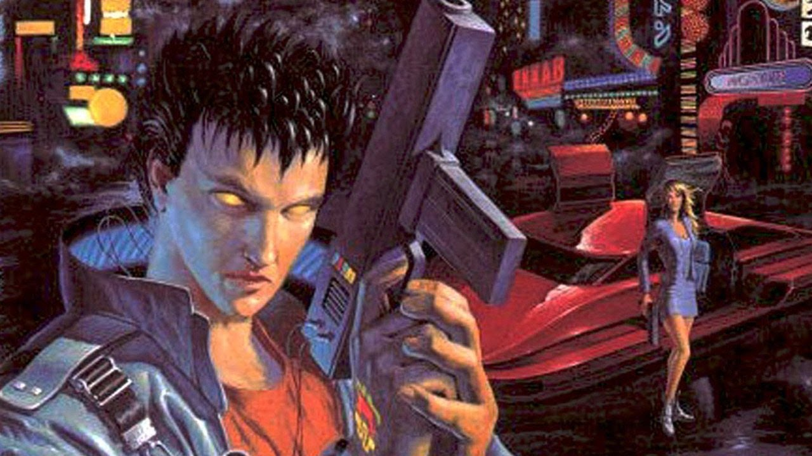
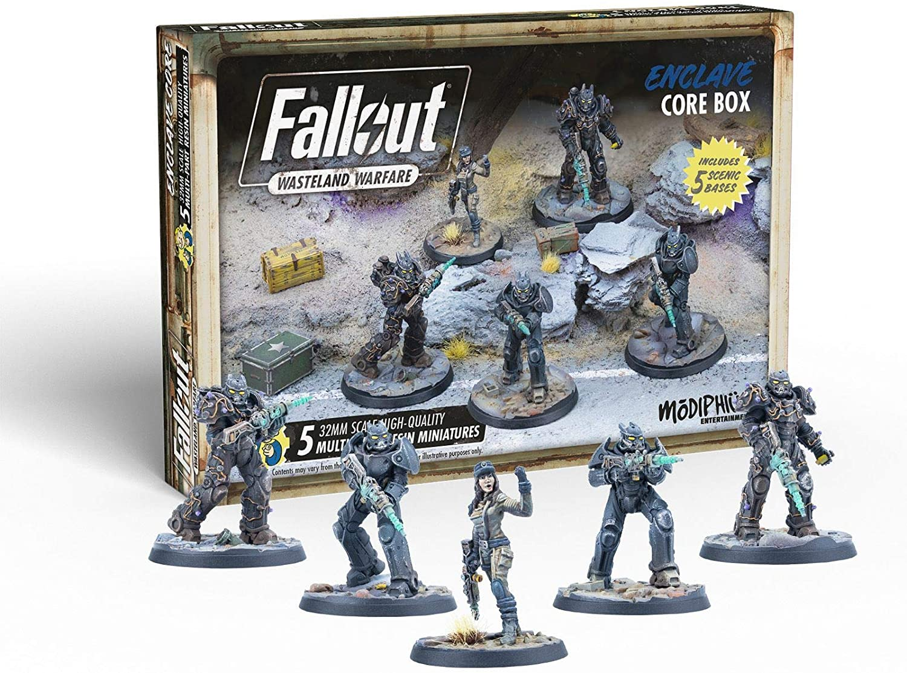
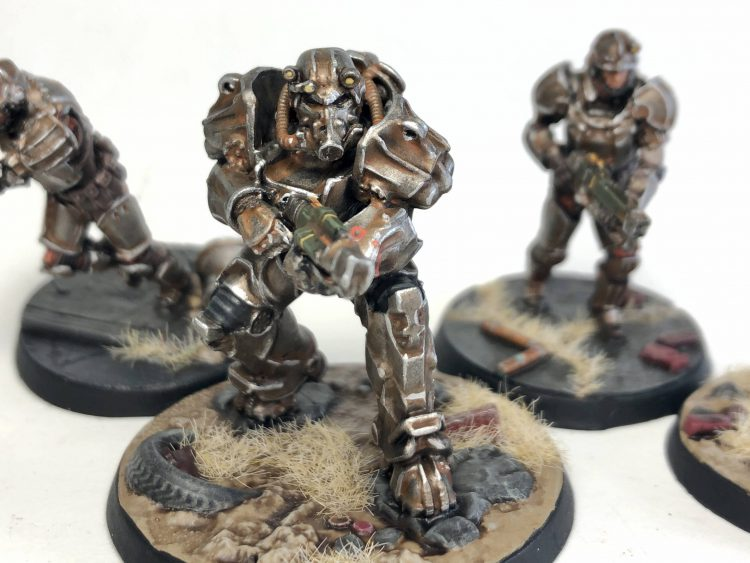
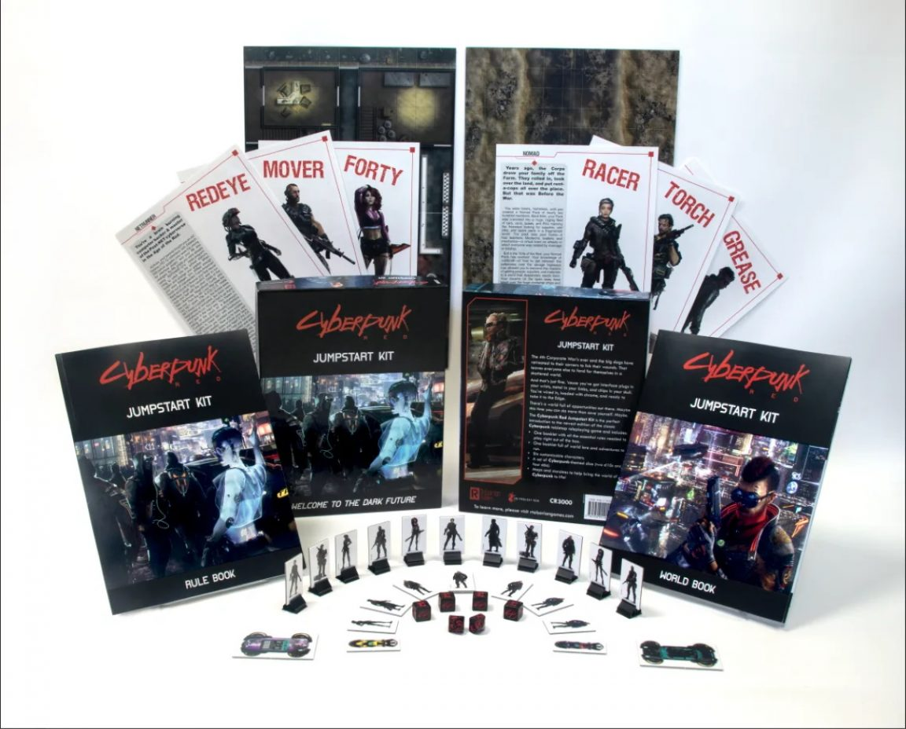
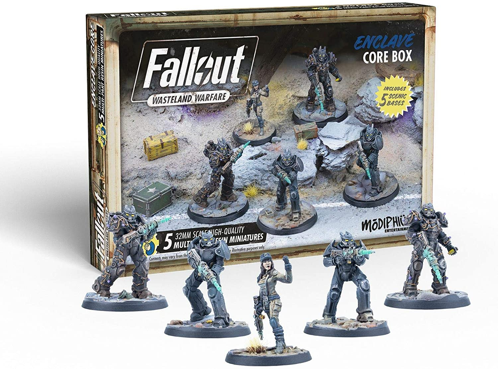
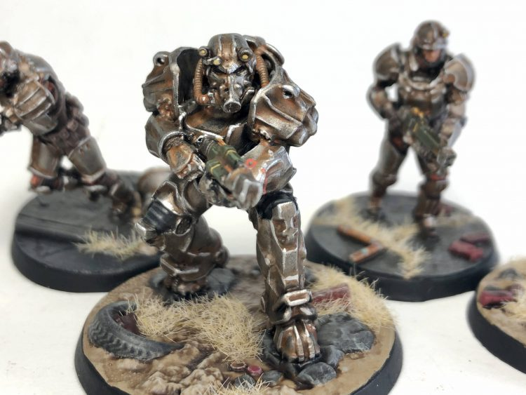
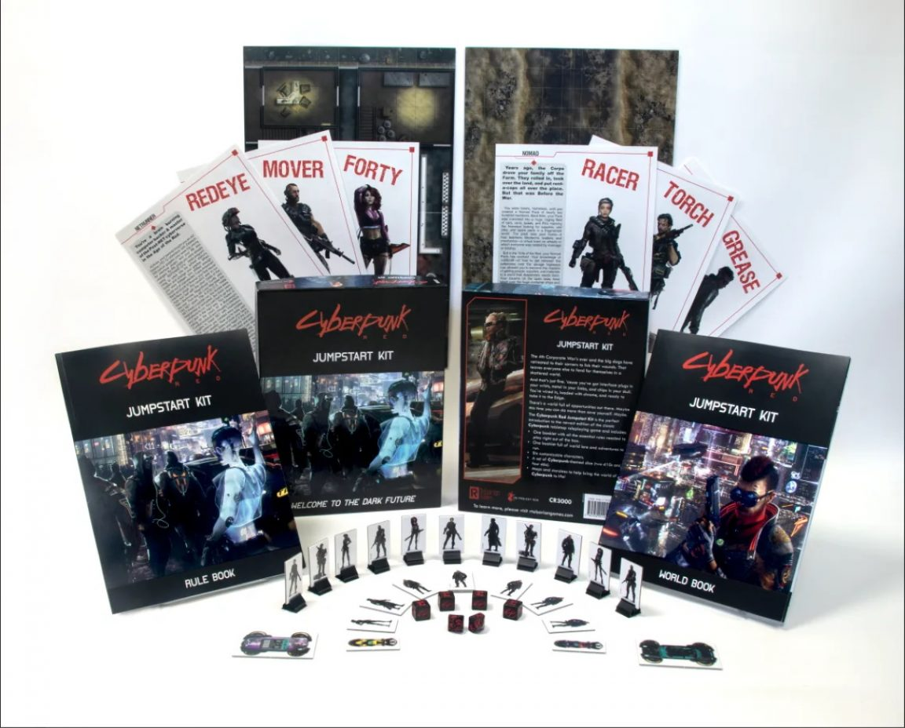

Magic: The Gathering — коллекционная карточная игра, созданная американским математиком Ричардом Гарфилдом в 1993 году и издаваемая Wizards of the Coast. Каждая партия в Magic представляет собой битву между волшебниками, известными как planeswalker'ы, которые разыгрывают заклинания, используют артефакты и призывают существ, изображённых на отдельных картах, чтобы победить своих противников.
WARHAMMER

Warhammer 40K — настольная игра-варгейм, разработанная и издаваемая британской компанией Games Workshop. Действие игры происходит в мрачной технофэнтезийной вымышленной вселенной. Игра была создана Риком Пристли и Энди Чамберсом в 1987 году как переработка в духе научной фантастики более старой настольной игры Warhammer Fantasy.
Fallout: Wasteland warfare

Fallout: Wasteland Warfare — варгейм с миниатюрами в стиле Fallout. Игроки создают свою собственную команду из самых разных фракций, союзников и знаковых персонажей из серии Fallout в огромном разнообразии знаковых пейзажей и локаций, от Красной Ракеты до Санктуари-Хиллз. Игра включает в себя целую сюжетную кампанию, а также уникальные случайные миссии.
Cyberpunk 2020

Cyberpunk 2020 — настольная ролевая игра в стиле киберпанк. Действие игры разворачивается в недалёком будущем, в вымышленном городк Найт-сити, расположенном на западном побережье США. После серьёзного экономического кризиса и введения военного положения правительство США было вынуждено просить помощи у нескольких транснациональных корпораций, что в конечном счёте наделило их неограниченными полномочиями. Территории за пределами городов подверглись сильному загрязнению в результате терактов и контролируются бандами мародёров, которые охотятся на проживающих там кочевников.
 




